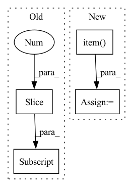

Pattern ID :34156
Before Change
size = (255 * buffer_[0].item()) + buffer_[1].item()
bytes_list = bytes(buffer_[2:size+2] .tolist())
result = pickle.loads(bytes_list)
return result
After Change
broadcast arbitrary data from root_rank to all nodes.
enc = pickle.dumps(data)
max_size = hvd.allgather(torch.tensor([len(enc)]).cuda()).max().item()
buffer_, enc_byte = _encode(enc, max_size)
hvd.broadcast_(buffer_, root_rank)
In pattern: SUPERPATTERN
Frequency: 3
Non-data size: 4
Instances Fragment ID: 97594384
Project Name: chenrocks/uniter
Commit Name: bb8926528e3783f339e8f4ae58ba6ff35ae6bc26
Time: 2020-08-06
Author: Yen-Chun.Chen@microsoft.com
File Name: utils/distributed.py
M Class Name: AnonimousClass
N Class Name: AnonimousClass
M Method Name: any_broadcast(2)
N Method Name: any_broadcast(3)
M Parent Class:
N Parent Class:
M File Name: utils/distributed.py
N File Name: utils/distributed.py
M Start Line: 184
M End Line: 205
N Start Line: 196
N End Line: 203
Before Change
)
x_tokenized = tok(x_text).to(device)
y_tokenized = tok(y_text).to(device)
next_token_ids = y_tokenized.input_ids[:, 0:1] // only compute loss over next token
for i in range(len(prefixes)):
with torch.no_grad():
_cand_input_ids, cand_loss, cand_n_correct = (After Change
)
)
all_candidate_losses[i] += cand_loss.item()
all_candidate_n_correct[i] += cand_n_correct.item()
return all_candidate_losses.cpu().tolist(), (all_candidate_n_correct / total_n).cpu().tolist()
def serialize(self, eval_dataloader: torch.utils.data.DataLoader, possible_answer_mask: torch.Tensor) -> Dict[str, Any]:
Writes stuff to disk. Saves other stuff to save as full results file. Fragment ID: 97594400
Project Name: csinva/imodelsx
Commit Name: 2146a56d4f9731bddbc01e4a9309cff248e6285b
Time: 2023-02-07
Author: jxmorris12@gmail.com
File Name: imodelsx/iprompt/autoprompt.py
M Class Name: AutoPrompt
N Class Name: AutoPrompt
M Method Name: _test_prefixes(4)
N Method Name: _test_prefixes(4)
M Parent Class: HotFlip
N Parent Class: HotFlip
M File Name: imodelsx/iprompt/autoprompt.py
N File Name: imodelsx/iprompt/autoprompt.py
M Start Line: 53
M End Line: 77
N Start Line: 59
N End Line: 89
Before Change
return predictions
def get_loss(self, x):
predictions = self(x[:, :-1] )
loss = F.cross_entropy(predictions.reshape(-1, predictions.shape[-1]), x[:, 1:].reshape(-1))
accuracy = (torch.argmax(predictions[:, -1, :], dim=-1) == x[:, -1]).float().mean()
return loss, {"loss": (loss.item(), x.shape[0]*(x.shape[1]-1)), "accuracy": (accuracy.item(), x.shape[0])}After Change
// print(torch.argmax(predictions[:, -1, :], dim=-1), x[:, -1])
loss = F.cross_entropy(predictions[:, -1, :], y)
accuracy = (torch.argmax(predictions[:, -1, :], dim=-1) == y).float().mean()
attn_entropies = sum([-(attn * torch.log(attn+1e-7)).sum(dim=-1).mean().item() for attn in attns]) / len(attns)
param_norm = parameter_norm(self)
return loss, {"loss": (loss.item(), x.shape[0]), "accuracy": (accuracy.item(), x.shape[0]),
"attn_entropy": (attn_entropies, len(attns)*x.shape[0]*(x.shape[1]-1)), "param_norm": (param_norm, 1)} Fragment ID: 97594397
Project Name: sea-snell/grokking
Commit Name: 9652db76d1cbdbe66e24e709168b12fa25ba00fc
Time: 2021-11-18
Author: sea_snell@icloud.com
File Name: grokk_replica/grokk_model.py
M Class Name: GrokkModel
N Class Name: GrokkModel
M Method Name: get_loss(3)
N Method Name: get_loss(2)
M Parent Class: nn.Module
N Parent Class: nn.Module
M File Name: grokk_replica/grokk_model.py
N File Name: grokk_replica/grokk_model.py
M Start Line: 17
M End Line: 20
N Start Line: 18
N End Line: 26